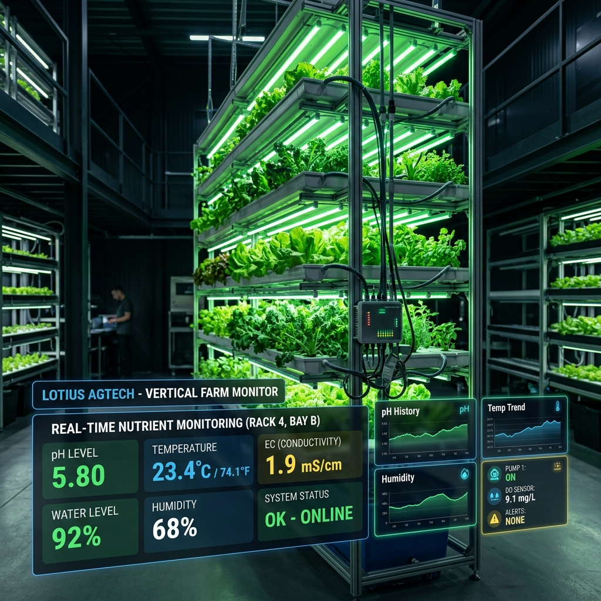

Do Laboratório ao Campo Vertical: Automatizando o Monitoramento Hidropônico com IoT
André Luis Ricartes da Silva & Renan Guilherme Nespolo
Publicado em 2026 • DOI: 10.31510/infa.v23i1.2449

A agricultura vertical e os sistemas hidropônicos deixaram de ser meras apostas de nicho para se tornarem peças-chave na produção sustentável de alimentos e na segurança alimentar em áreas urbanas e periurbanas. No entanto, o controle fino de ambientes controlados exige precisão contínua: desvios mínimos de pH, nutrientes ou temperatura na solução hidropônica podem comprometer safras inteiras em poucas horas.
Para enfrentar esse desafio operacional, desenvolvemos e validamos um MVP (Produto Mínimo Viável) voltado ao monitoramento automatizado de sistemas hidropônicos verticais utilizando Internet das Coisas (IoT).
Os resultados e a arquitetura desse desenvolvimento foram publicados no artigo acadêmico na Revista Interface Tecnológica (DOI: 10.31510/infa.v23i1.2449).
O Gargalo: Por Que Automatizar?
Na hidroponia comercial ou em microprodução, o manejo tradicional baseia-se em coletas manuais intermitentes. Esse modelo apresenta duas falhas estruturais:
O produtor só percebe a anomalia após o estresse vegetal já ter iniciado, quando os danos metabólicos à lavoura já foram causados.
A checagem manual frequente consome tempo qualificado da equipe e está sujeita a erro humano ou falhas de calibração pontual dos medidores portáteis.
Ao estruturar um MVP de monitoramento contínuo, o objetivo foi simples: trocar a medição reativa por uma infraestrutura preditiva de baixo custo.
O Que Esse MVP Resolve na Prática
Telemetria Contínua
Coleta e transmissão periódica de parâmetros vitais da solução nutritiva e do microclima, gerando um histórico confiável de dados para análise agronômica.
Arquitetura Acessível
Implementação projetada com componentes robustos e viáveis para pequenas e médias estruturas, evitando sistemas proprietários proibitivos.
Alertas e Decisão Ágil
Redução drástica da necessidade de intervenção física desnecessária, alertando o operador apenas quando limites críticos são violados.
Próximos Passos e Limites do MVP
Todo MVP cumpre a função de validar a hipótese técnica primária. A partir desta etapa, os desafios de escala envolvem:
- Autonomia e auto-calibração: Implementação de rotinas de limpeza e diagnóstico de integridade dos eletrodos em contato direto com a água e fertilizantes.
- Modelos de Automação Fechada (Controle Ativo): Evoluir do monitoramento/notificação para sistemas autônomos de dosagem de nutrientes e correção de pH via atuadores.
Leia a Publicação Completa
Para detalhes técnicos sobre a arquitetura do hardware, protocolo de comunicação e dados colhidos durante a validação experimental:
Artigo: Desenvolvimento de MVP para Monitoramento Automatizado de Agricultura Vertical Hidropônica com IoT
Autores: André Luis Ricartes da Silva, Renan Guilherme Nespolo
Periódico: Revista Interface Tecnológica, v. 23, n. 1, 2026
DOI: 10.31510/infa.v23i1.2449